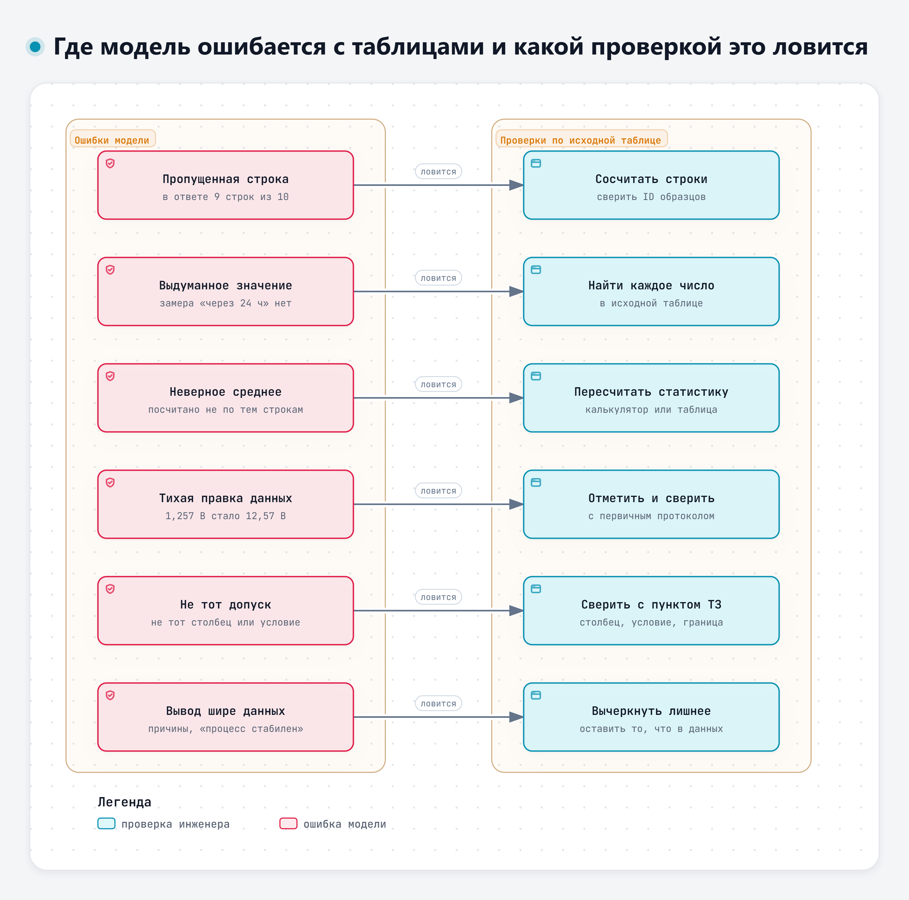
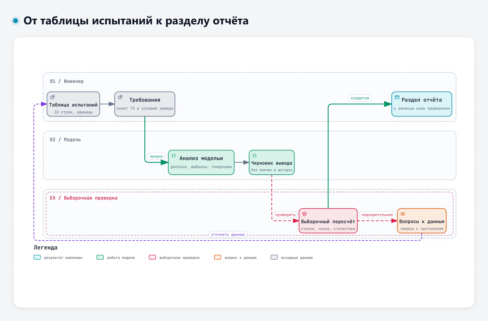

Анализ результатов испытаний и измерений
Модель быстро разбирает таблицу. Ошибки модели в отчёт не попадают
23.11.2026 · 11:10–16:10 · Виталий Пиков · архитектор информационной безопасности · pikov.expert
Учебная таблица 1
| Что | Значение |
|---|---|
| Образцы | 10, отдельная учебная серия |
| Ток покоя через 30 мин | п. 4.3 ТЗ, ред. 1: не более 40 мА |
| Ток покоя через 2 ч | требований нет, справочно |
| Напряжение батарей после 14 сут | п. 4.5 ТЗ, ред. 1: не ниже 12,2 В |
Значения учебные, перенесены из учебного протокола без исправлений
Где модель ошибается с таблицами и какой проверкой это ловится

Интерактивная версия – 08-Схемы/d4-oshibki-tablic.html
От таблицы испытаний к разделу отчёта: где модель помогает и где проверяет инженер

Интерактивная версия – 08-Схемы/d4-tablica-k-vyvodu.html
Как передать модели таблицу
Учебные таблицы – в сервисах, выбранных для занятия с учётом правил доступа; реальные – только в разрешённых
Вставка текстом – основной способ
- Одна строка – один образец, у каждого свой ID
- В заголовке – величина и единица
- Перед таблицей – условия испытаний и пункты требований
- Один десятичный знак на всю таблицу
- Без объединённых ячеек и многоэтажных заголовков
Файлы и объём по справке сервисов
| Сервис | Что сказано в справке |
|---|---|
| GigaChat | Файлы DOCX, PDF, TXT; запрос до 4000 символов |
| Алиса AI | Один файл DOC, DOCX, PDF или TXT до 100 МБ |
| XLSX, CSV | В этих разделах справки не названы – надёжнее вставить текстом |
Справка сервисов на 10.11.2026. Поведение с файлами таблиц проверим на практике
Середина длинного текста
Модели обычно работают лучше всего, когда нужные сведения находятся в начале или конце входного текста; если сведения находятся в середине длинного текста, результаты заметно ухудшаются, даже у моделей, специально рассчитанных на длинный контекст
Liu и соавт., 2024, TACL, doi.org/10.1162/tacl_a_00638
Что может модель
- Описать данные: сколько образцов, какие величины, пропуски
- Найти значения за допуском – если указан пункт, столбец и условия
- Найти выбросы – явные надёжнее, чем тонкие
- Сравнить серии, назвать тенденцию, предложить график
- Написать черновик вывода
Считает ли модель?
- GPT-4 с выполнением кода: описательная статистика во всех попытках в пределах 1 % от контрольных значений
- Статистические критерии: 32,5–92,5 % попыток удовлетворили критерию точности, в зависимости от подробности запроса
- Собственные числовые навыки моделей – арифметика, поиск и сравнение чисел – остаются слабыми
- По ответу не всегда видно, как считали – пересчитываем по таблице
Ruta и соавт. 2025 – одно исследование одной модели; Li и соавт. 2025
Где модель ошибается с таблицами
Пять видов – в учебном ответе по таблице 1, шестой – в таблице 2 домашнего задания
Шесть видов ошибок
| Ошибка | Пример из учебных таблиц |
|---|---|
| Пропущенная строка | «10 образцов», в таблице 9, нет О-04 (41,6 мА) |
| Выдуманное значение | «через 24 ч – 58 мА», такого замера нет |
| Неверное среднее | 34,7 мА – по 8 образцам из 10 |
| Тихая правка данных | 1,257 В превратилось в 12,57 В |
| Не тот допуск | Таблица 2: допуск для +25 °C применён ко всем температурам |
| Вывод шире данных | «процесс стабилен», причины отклонений |
Три верных средних
| Набор | Среднее тока через 30 мин |
|---|---|
| Все 10 образцов | 40,37 мА – выше 40 мА |
| Без О-07 | 35,44 мА |
| Без О-04 и О-07 | 34,68 мА |
| Медиана, все 10 | 35,2 мА |
Требование проверяется у каждого образца. В отчёте – по какому набору считали
Таблицы низкого качества
Например, такие применения, как бизнес-аналитика, требуют не только многошаговых вычислений по таблицам, но и устойчивости к неполным или противоречивым данным
Tian и соавт., 2026, Findings of ACL, doi.org/10.18653/v1/2026.findings-acl.759
Выборочная проверка: шесть шагов
В отчёт – строка «Как проверено»: что пересчитано и сверено
Честная подача результатов
- Десять образцов – маленькая выборка, вывод – ориентир
- Объём выборки и ограничения называются в отчёте
- Результат одной серии относится к этой серии
- Эффект доработки – только если другие условия не менялись
- Среднее с выбросом – вместе с медианой и максимумом
Примеры честной подачи замеров – доклады В. Малаканова и С. Скидана, ИИ-митап, ноябрь 2026
Раздел технического отчёта
Таблица испытаний: анализ, проверка, отчёт
Разбор с ИИ, выборочный пересчёт, поиск ошибок, раздел отчёта
Задание 1. Разобрать таблицу с ИИ
- Таблица 1 текстом, условия и требования перед ней
- Соответствие п. 4.3 и 4.5 ТЗ (ред. 1), статистики, выбросы, тенденции
- Отметить сомнительное, ничего пока не пересчитывая
- Что модель сделала с О-05 и О-07?
Не добавляй значений, которых нет в таблице. Подозрительные значения не исправляй, а перечисли отдельно. Укажи, по каким образцам считал статистики.
Задание 2. Выборочный пересчёт
- 2а. Свой ответ: шесть шагов проверки, 40 мин
- Числа – по исходной таблице, не по ответу
- 2б. Готовый ответ с ошибками из раздела 6, 30 мин
- Для каждой ошибки – каким шагом поймали
Задание 3. Раздел отчёта
- Черновик от модели по заданной структуре
- Проверка по результатам задания 2а
- Ручные правки и строка «Как проверено»
- Итог – раздел, который вы готовы подписать
Итоги дня и домашнее задание · 20 мин
- Какая ошибка модели встречалась чаще всего?
- Какая проверка самая полезная на минуту времени?
- Самостоятельная работа: задача 2 и таблица 2, контрольная точка модуля 4
- Срок – до 08:00 25.11.2026
Автор курса – Виталий Пиков
| Регалии | Архитектор информационной безопасности · РБПО · DevSecOps · AppSec |
| Лектор и автор образовательных программ по ИБ и РБПО | |
| Телефон | +7 (963) 782-92-78 |
| vitaly@pikov.expert | |
| Сайт | https://pikov.expert |
| Telegram | @UnderLineSecurity |